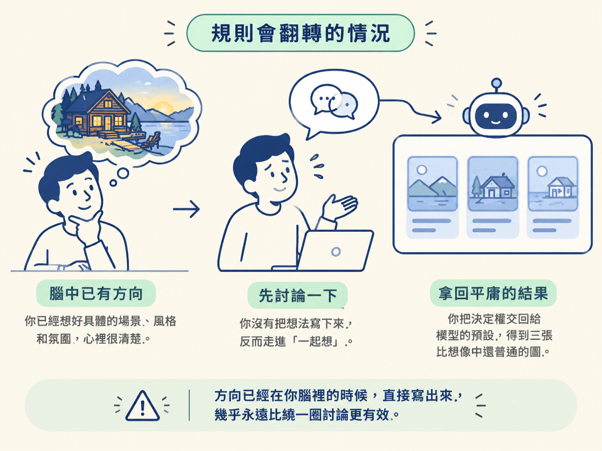

看完這一節，你能在開工前一秒做出判斷：這份視覺方向該自己寫進 brief，還是先跟 Codex 一起把它想出來。
做 landing page 最常見的死法，是開口只講一句「要有質感一點」。這句話聽起來像方向，其實是空的：Codex 沒有東西可以接，只能退回預設的漸層、大留白、圓角卡片，於是成品長得跟隔壁專案一模一樣。
前兩節給了你兩個槓桿：一份拉開預設的視覺方向，和兩個擋住細節味道的 skill。但槓桿要有支點才能施力，而支點就是「你自己知不知道要什麼」。問題在於，有時候你真的不知道。你只知道現在這個版本不對，卻講不出材質、氛圍或配色。這時硬擠一份方向出來，往往擠出一個你自己都不喜歡的答案。
所以這裡要做一個決定：方向是由你直接寫死，還是先跟 Codex 聊出來？兩條路沒有絕對優劣，差別只在你腦中現在有沒有畫面。這節把判準講清楚，讓你下次開工當下就知道走哪一條。
自己定方向，就是把氛圍、材質、配色、字體寫進 brief，然後直接進入建置。這條路最快，少一輪來回，前提是心裡已經有一個明確的畫面。
跟 Codex 一起想，則是先來回討論（用語音即時聊，或直接要它生出幾個不同的視覺概念），看到選項之後再挑一個。多花一輪，換到的是更原創、也可能超出你原本想像的方向。
| 自己定方向 | 跟 Codex 一起想 | |
|---|---|---|
| 適用時機 | 腦中有具體畫面、材質或氛圍 | 只有模糊喜好，或完全沒想法 |
| 做法 | 把氛圍、材質、配色、字體寫進 brief | 用 voice mode 即時聊，或要它生三個概念 |
| 產出 | 帶著方向直接進入建置 | 先拿到幾張概念圖，挑一個再建置 |
| 節奏 | 最快，少一輪來回 | 多一輪，但方向可能更原創 |
「一起想」有兩種常見形式。一種是 voice mode：Codex app 上有個跟 ChatGPT 一樣的語音按鈕，你可以邊想邊講，把零散的念頭丟出來，來回討論，在寫正式 prompt 之前先把方向聊出來。另一種更直接：請它「生成三個不同的視覺概念」，背後的 image generation 會畫出實際的圖。你從三張裡挑一張，再叫它把挑中的那個概念建成網站。
整套判準可以壓縮成一個問題：你現在能不能想像成品長什麼樣？
如果你講得出材質（起霧的玻璃、老木頭）、氛圍（老派、安靜、像冬天）、配色（深綠為主）或字體性格，那就屬於「自己定」。直接寫進 brief，別浪費一輪去等概念圖，你已經有答案了，等圖只是繞路。
如果講不出來，或講出來連你自己都覺得空泛，那就屬於「一起想」。先讓 Codex 給你幾個具體選項，再用「喜歡／不喜歡」去逼出你的偏好。人不太會描述自己想要什麼，但很會在看到東西的瞬間說出「這個不要」。
這裡要提醒一件事：選了「一起想」，你的輸入也不必漂亮。你可以直接口述一段東拼西湊的偏好，例如「它是海灘旁的餐廳，我不知道要海灘感還是很高級，或是那種天然、像待在家裡的感覺，你可以生成三個不同的視覺概念嗎？」這種話模型完全接得住。重點是給它一個起點讓它回應，而不是要求自己先想清楚才准開口。
有幾個反例值得記住。
第一，選了「自己定」不等於要寫得很細。指定到精確色碼與像素間距是過頭了，那是在寫規格，不是在給方向。一個能被想像的畫面就夠，剩下的細節交給 Codex 去填。
第二，選了「一起想」，概念圖也不是終點。挑定之後，你還是要回到建置流程，請 Codex 把那個方向做成真正的網站。概念圖是拿來決定方向的，不是拿來交差的。
第三，語音不是必要條件。三個概念用純文字一樣能要，voice mode 只是聊起來更順、更容易把模糊的感覺講出來的一種方式。
還有一個最容易踩的翻轉點：你腦中其實有方向，只是懶得寫，於是騙自己說「先討論一下」。這種時候走「一起想」，往往拿到三張比你想像中還普通的圖，因為你把決定權交回給了模型的預設。方向已經在你腦裡的時候，直接寫出來，幾乎永遠比繞一圈討論更有效。

腦中有畫面，就把氛圍、材質、配色、字體寫進 brief，直接開工；講不出來，就先要三個視覺概念（或開 voice mode 聊），從選項裡挑一個你真正喜歡的，再叫 Codex 把那個概念建成新資料夾。判準永遠是同一個問題：你現在能不能想像成品長什麼樣？
不管你走哪一條，最後都會收斂到同一份東西：一份把方向、內容、品質講清楚的 brief。那份 brief 長什麼樣、由哪幾個區塊組成，就是下一節要拆解的事。